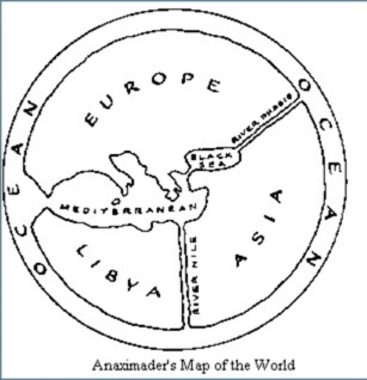
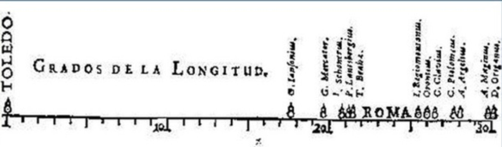
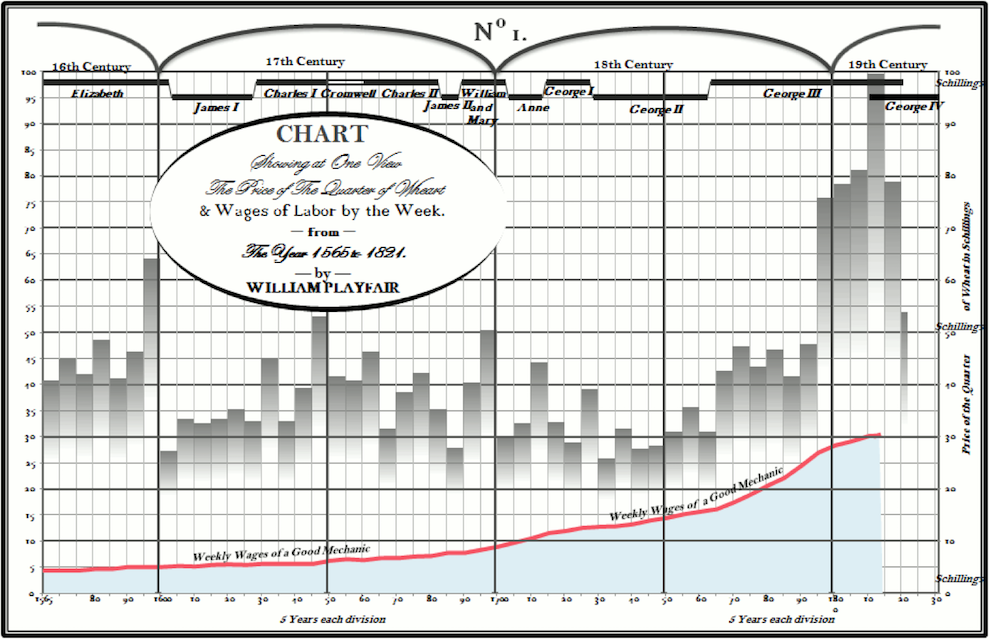
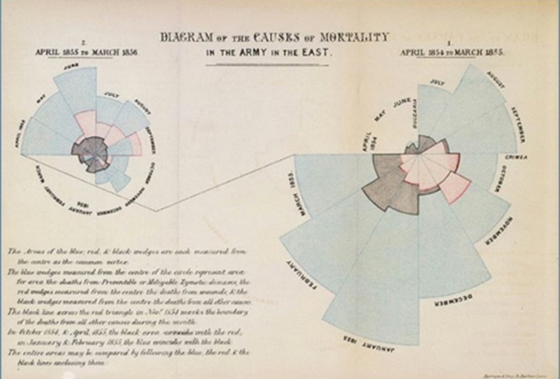
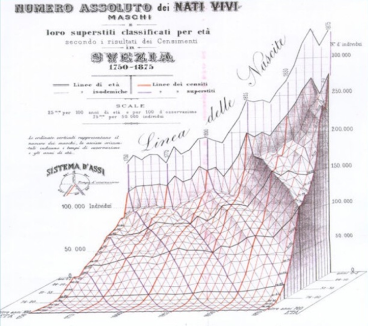

Data Journalism Basics
with Lisa Williamslisatmh AT gmail dot com
@lisawilliams
More on me and my work
Network: Netgear56-5G-1
PWD: vastiris174
Get Ready!
Visit
http://lisawilliams.github.io/visual-thinking
This is where you will find all the links and resources for today's talk.
Download Tableau
If you haven't done so already, download Tableau.
If you have an .edu address: tableau.com/academic/studentsIf you don't have an .edu address, the free trial is here: https://www.tableau.com/products/desktop/download
Want to see some new stuff?
Download SQLite Browser
Dealing with Data
Grab some data
A Little SQL
SELECT * FROM `fire-incidents-boston` WHERE CitySection = "JP"
Select * FROM `fire-incidents-boston` WHERE CitySection = "JP" AND PropertyDescription = "Multifamily dwelling";
SELECT * from `fire-incidents-boston` WHERE EstimatedPropertyLoss > "500" and CitySection = "JP" and PropertyDescription = "Multifamily dwelling"
Investigating Data Types
Click Database Structure > click on table > Modify Table
SELECT * from `fire-incidents-boston` ORDER BY EstimatedPropertyLoss DESC;
A Brief History Of Data Visualization
3500 BCE
3100 BCE
500 BCE
1525 CE
1821 BCE
1855 CE
1875 CE
1963 CE
1970 CE

Hands-On:
Scraping Data
Instructions and Data Files
Instructions and data files for the hands-on portion of this talk can be found here:https://lisawilliams.github.io/lisa/tech/2018/03/14/scrape-to-map-tableau-tutorial.html
Thinking Visually

Good Chart, Bad Chart
Hands-On:
From Scrape to Map
Instructions and Data Files
Instructions and data files for the hands-on portion of this talk can be found here:https://lisawilliams.github.io/lisa/tech/2018/03/14/scrape-to-map-tableau-tutorial.html
Charts On The Dark Side
How To Spot
Manipulative and Deceptive
Charts and Graphs

Good Chart, Bad Chart
Q&A
Thanks
Questions?
Reach Lisa Williamslisatmh AT gmail dot com
@lisawilliams
More on me and my work
http://lisawilliams.github.io/data-journalism-basics
How this presentation was made
This presentation was made using Reveal.js, a framework for making HTML slide presentations; Reveal.js is a Node.js application. For more details, visit the repository for this application at https://github.com/lisawilliams/visual-thinkingYou can always find this presentation and its resources at http://lisawilliams.github.io/data-journalism-basics